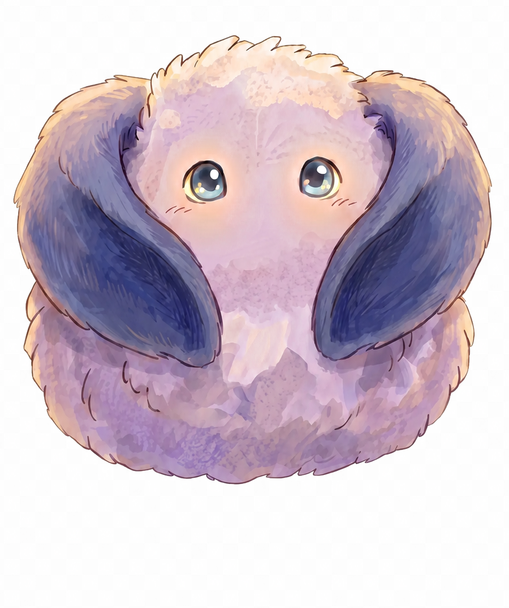

ORIGINAL IP UNIVERSE
◐
♫
Разделы
Во весь экран
↑ / ↓ — слайды · F — fullscreen · H — чистый режим
ORIGINAL IP UNIVERSE
Погрузиться во вселенную
ЛИСТАЙ

Загрузка вселенной
0
%
Для просмотра web-deck включите JavaScript: он нужен для навигации, меню и мобильной версии.